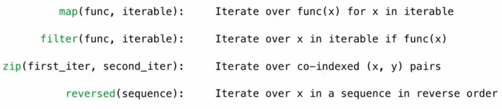
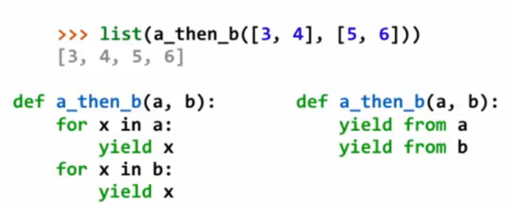
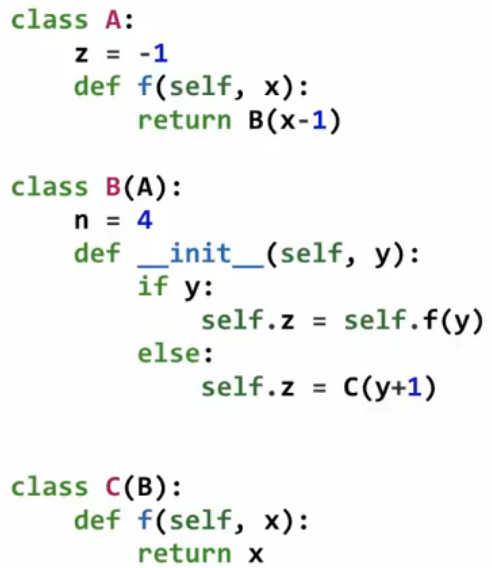
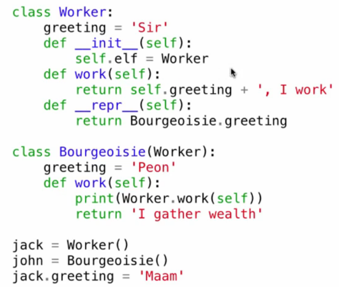
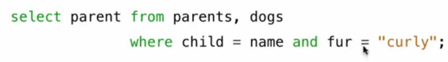
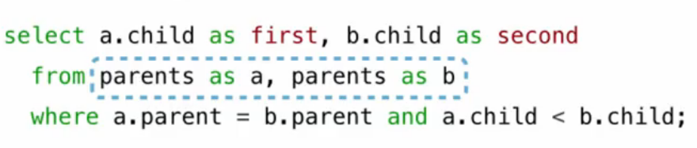
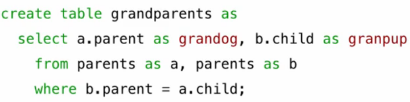
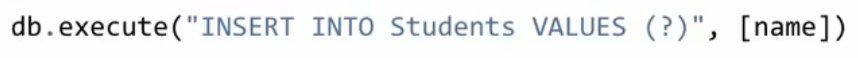

CS61A¶
本笔记基于CS61A 2020 Fall课程内容整理。
本来是打算把作业都做完的，但是后来填坑的时候人家学校对往年资源做了访问限制，后面的就简单看看课程好了。（其实就是因为我懒）
Week 1¶
Computer Science is the study ofwhat problems can be solved using computation,how to solve those problems, and what techniques lead to effective solutions.
Lab 00¶
课程作业的提交涉及到Git的安装与使用，需要给电脑安装Git，并掌握基本的git命令。
使用方法：
1.打开Git Bash
2.使用命令行语句进入指定目录
3.使用python来打开文件，自动完成代码检测
涉及的命令行语句：
| Python | |
|---|---|
Functions¶
表达式的分析顺序：先看操作符（或对应的函数），再看操作数（也可以是一个基元表达式）。
赋值语句的执行顺序：1.等号右侧从左到右计算。2.将右侧的结果赋值到左侧。
以上代码将会输出2 3
赋值和函数定义都是一种抽象方式，后者更为强大。找声明时优先在本地框架找，找不到再去全局框架找。
HW 01¶
需了解operator库里的常见函数：加法 a + b add(a, b) 减法 a - b sub(a, b)。
并初步理解函数的抽象性；了解min和max的运用。
关于git的上传的重要补充：
基本流程：工作区-add-暂存区-commit-本地仓库区-push-远程仓库区。
| Python | |
|---|---|
如果开了代理还是提交失败，可能是git未使用代理，需设置代理： git config --global http.proxy 127.0.0.1:7890（从系统设置查看IP和端口）。在vsc中提供了git的可视化操作，极大降低了对命令行的要求，可以考虑使用。
Week 2¶
Control¶
Python中每个函数都有返回值，当没有明确返回值时将会返回默认的None（None表示空，是隐性的）。
纯函数只有返回值，非纯函数会产生别的效果（如打印值，即display value）。
一个程序会有多个框架，包括全局框架和局部框架（如函数体内部），相同的变量名在不同的框架内可能拥有不同的含义。
可以根据子框架追溯到父框架，变量和函数优先在子框架中找到定义，找不到再去父框架找。
运算符可以看作是运算函数的简记符。truediv:/ floor:// mod:\%
一个函数可以有多个返回值，用逗号隔开的返回值会按顺序返回。
doctest可以通过文档内的提示语句来实现对代码的运行过程和结果进行测试，检验是否符合预期。
doctest的调用：python -m doctest -v example.py
doctest 的写法：在函数的注释中写入：> > > 函数（值），回车写入预期结果。
条件语句的基本写法：
while语句：
例子，质因数分解：
| Python | |
|---|---|
这个例子的绝妙之处在于，通过循环实现了类似于递归的效果。
可以先把一个大功能划分成若干个小功能，再逐一实现。
Lab 01¶
要学会使用把数字转成字符串，然后用for遍历每个数字的办法。
Higher-order Functions¶
以斐波那契数列为例：
| Python | |
|---|---|
assert语句的运用：
| Python | |
|---|---|
对函数划分的精妙运用：
| Python | |
|---|---|
从上面的例子可以学到：把相同点抽象出来作为一个函数框架，然后在具体函数中调用并补全这个框架。
在函数框架中使用另一个函数名或一个常数作为参数，可以实现不同的运算法则。
| Python | |
|---|---|
函数可以作为参数，把函数入口作为返回值，可以在全局框架中被调用。这就是高阶函数的应用。
lambda表达式：（匿名函数的使用）1.square = lambda x: x * x（参数:表达式）
2.(lambda x: x * x)(4)（可直接调用）
3.def compose1(f, g):
| Text Only | |
|---|---|
1 | |
| Python | |
|---|---|
自带函数的控制语句具有调用表达式无法实现的作用，因为调用表达式总是先计算表达式的值。
在逻辑判断中会有“短路”现象（这也是一种控制），以避免不必要的运算，类似于c语言。因此需掌握and，or，not的用法。
A and B:两者都正确，返回 and 后面的值;两者有一个错误，返回最先错误的。
A or B:返回其中布尔值为 True 的一方;若无，返回 or 后面的值。
也就是说：在哪里停下就返回哪里的结果。
| Python | |
|---|---|
Hog¶
这是一个很有意思的项目，不过中间遇到了一些问题。
1.在problem6中写错了函数的位置，但是意外通过了测试点，导致后面在写problem7的时候始终没找到bug，要十分小心。(后来发现其实是测试文件还没解锁，自己没仔细看以为是通过了，难绷)
2.problem7中以高阶函数的形式修改了原函数参数的默认值，非常巧妙。
3.高阶函数使用时给参数赋值的顺序也很有讲究，会影响逻辑结构。
Environments¶
高阶函数的特点：以函数作为参数，或返回函数，后者用到嵌套定义。（子框架中用到的未定义参数会到父框架中找值）
在已有一个函数的情况下，仅用该函数作为参数来定义函数，使用多层嵌套来返回被定义的函数时可以实现一个效果：新定义的函数可以通过多次赋值来逐层解开嵌套。如定义一个以f0为参数的f1，然后在f1中定义f2，f2中定义f3，并且f3返回占位赋值后的f0的结果（事实上还未赋值，只是用参数先占住了位置），f2返回f3，f1返回f2，并用fun1来存储最后这个返回值。先调用fun，将f0代入，接下来，调用fun1，代入的参数会补全f2的空缺部分，然后返回f3（此时的f3和前面的f3已有不同），并用fun储存这个返回值。继续调用fun，代入的参数将同前面的参数一起补全f0所需的参数，完成f0的完全调用，并返回f0的结果。
这是currying的应用。柯里化（Currying）是一种处理多元函数的方法。
它产生一系列连锁函数，其中每个函数固定部分参数，并返回一个新函数，用于传回其它剩余参数的功能。
| Python | |
|---|---|
Lab 02¶
简单的高阶函数运用。
Week 3¶
Design¶
函数命名最好能反映其效果、行为、返回值，见名知义。给重复使用的表达式或过程进行命名。
Functions Example¶
一些实例，用于应付考试。通过代入特定的值来理顺程序的执行内容。
Week 4¶
Recursion¶
递归函数：直接或间接地调用自己的函数。通常从判断基本情况开始，基本情况的判断是不需要递归的；更复杂的情况则会通过调用自己来一步步地化简到基本情况。基本情况可以不止一种。递归可以理解为数学归纳法的实际应用。因此可以用数学归纳法来设计和检验递归函数。
当有奇偶数区分时可以设计两个递归函数分别调用对方。递归和迭代（循环）往往可以相互转化，但递归往往更简单。
Tree Recursion¶
| Python | |
|---|---|
树递归：递归函数体中有多次对自身的调用。
如斐波那契数列：
| Python | |
|---|---|
步骤较多的递归可以通过记值来简化计算过程。使用递归可以写出汉诺塔每次移动的步骤。
HW 02¶
递归函数也可以越递归参数越大，只需要写一个高阶函数再调用，就可以实现和while语句相近的效果。
在没有函数名的情况下也可以通过lambda语句实施递归操作，但是需要将函数自身作为参数传递到每一次的调用之中。
Week 5¶
Containers¶
lists:列表，[]:列表之间可以直接相加和相乘。可以用in和not in判断某个元素是否在列表中。
用'for element in list：'来遍历列表。（element可以是多个参数，用于读取嵌套列表中的元素）
range(start,end)前闭后开，用list(range(start,end))可以构造列表，只含区间内的整数。
[expression for element in list]可以对已有列表的基础上通过表达式写出新的列表，也可以取出列表里特定序号的元素。
[expression for element in list if condition]可以按条件筛选元素。
strings:字符串，' ' " "。
用exec可以执行字符串中的表达式，用序号取字符串的元素得到的还是字符串。
用in表达式可以判断某个单词或某个部分是否在字符串中出现。
Lab 04¶
对整数进行逐位递归处理时可以先从第一个开始，也可以先从最后一个开始。
Data Abstraction¶
分数可以看成是由分子和分母构成的复合数据，计算时可以分别得到分子和分母，以保证精确度，如分数的加减法。要保证代码块的抽象化，需要使用函数来封装功能，避免出现难以理解的数字和实质。
在不使用列表的情况下实现对分子分母的返回（涉及高阶函数）。
dictionaries:{key:value}，字典，无序。用keys/values/items来取出所有的元素（键/值/对）。
dict.get(key,0)可以返回对应的键，找不到则默认返回后面的0。
[key:expression for element in range]可以快速构建字典。
Cats¶
写一个打字练习器。里面有一个关于递归的处理很巧妙：
| Python | |
|---|---|
形成像树一样的分支结构。
Trees¶
框-指针表示法：可用于表示树结构。嵌套列表是一种典型的树结构。
切片：[start\:end\:step]前闭后开。
序列内置了sum/max/all函数，可以直接使用。
A tree has a root label and a list of branches.Each branch is a tree.
Week 6¶
Binary Numbers¶
二进制数在计算机中存储比其他进制的稳定。负数以补码形式参与计算。补码的补码是原码。100的补码还是100，从而避免了-0的出现。
布尔逻辑：and/or/not。通过串联和并联分别构建and和or。另开一条带电阻的通路可以构建not。
Lab 05¶
| Python | |
|---|---|
Circuits¶
设计电路：1.列真值表。2.为每个输出列的每一种情况写逻辑表达式（这个逻辑表达式必须保证只有一种输入才能得到该情况下的输出，即形成充分必要条件，只看输出为1的情况即可）。
3.组合每列所有情况来得到适用整个列的表达式。4，画电路图。
通过层层抽象来在简单结构的基础上构建更复杂的结构，但是简单抽象后的电路未必是资源优化最好的。
加法器：需要处理加法与进位，三进二出。
卡诺图化简法（Karnaugh maps）：用二维的方格图来简化逻辑（电路），尽量保证图表的坐标轴上相邻两个输入有一位及以上的相同位，可以更好地找到更有代表性地逻辑表达式。
Mutable Values¶
对象：含有绑定在变量和函数的属性（数据和行为）。对象储存在类中。
用点表达式来访问对象的属性或方法。 对象的类型是class（类）。Python中的每一个值都是对象。
如：字符串是一种对象，含有大小写切换等方法（upper/lower/swapcase）。
ASCII码是美国信息交换标准代码，用7位二进制数表示128个字符。用ord()可以得到字符的ASCII码值。
Unicode是一种字符编码标准，旨在为世界上所有的字符提供唯一的编码，囊括了十万余种字符。
列表（lists）：[]，可以更改。
列表方法：
- append（以一个元素的形式追加到列表）
- extend（另一个列表的元素分别添加到列表）
- pop（移除并返回最后一个元素）
- remove
加和或切分会在已有元素的基础上产生新列表，里面的嵌套列表依旧指向原对象。
list()：也在已有基础上产生新列表，但是属于一个新的对象。
元组（tuples）：()，不可更改，可以作为字典的键。可以更改元组中的可变容器，如列表。
is：可以用于判断两个变量是否指向同一个对象。
| Python | |
|---|---|
可变的函数默认参数是危险的，因为在函数内修改参数会影响到下一次的调用。
Week 7¶
Mutable Functions¶
在 Python 中，可变对象（如列表、字典等）可以在函数中被修改。这种特性使得函数可以直接改变传入的可变对象，而不需要返回新的对象。
子框架中用到的父框架里的参数（没有在参数表里的）要用nonlocal标明参数（此时该参数是一个全局变量）。
这个全局变量可以是嵌套函数中的父函数的参数，而未必一定在全局中声明。
由于list是mutable，可以使用父框架中的列表来实现类似的可变函数中的全局变量，这样可以不使用nonlocal关键词。
Iterators¶
迭代器是 Python 中用于遍历容器（如列表、元组等）的一种对象。迭代器对象实现了迭代协议，包括 __iter__() 和 __next__() 方法。前者返回一个迭代器，后者返回迭代器中的下一个元素。
例如，在列表中，使用iter()和next()可以使用迭代器的功能，使用list()能用迭代器中列表剩余的元素生成一个新的列表。
以下是一个简单的迭代器示例：
在使用字典的迭代器的过程中修改字典会导致原有的迭代器失效。
一些内置的序列函数：

map()函数返回一个迭代器，这个迭代器在每次调用next()将iterable中的参数传入func，运行func后将其返回值返回。
不要将迭代器和列表做比较。
生成器（Generators），是创建迭代器的一种简便方法，使用 yield 关键字。生成器函数在每次调用 yield 时返回一个值，并在下一次调用时从上次离开的地方继续执行。
以下是一个简单的生成器示例：
| Python | |
|---|---|

yield from可以将生成器中的函数返回值作为next的值输出，类似于递归。
Objects¶
对象是类的一个实例化，类充当了一种类型的所有对象的模板。
构造函数可以用输入的参数值来构造并返回一个新对象。
OOP（Object-Oriented Programming）：面向对象编程。
以下是一个简单的类定义示例：
| Python | |
|---|---|
init会在以类名作为函数被调用时运行，接收参数并初始化实例，最后返回这个对象。
在这个例子中定义了一个简单的方法（对象内置的函数），即bark，可以用点表达式调用。
在本对象内引用自己需要使用self，一般而言方法内都会使用self作为参数。
Python有一个内置函数可以访问对象内的属性：getattr(object , 'name')。
类内也可以有通用的属性，例如所有银行用户都是使用同一个利率，就可以把这个参数写在类里，这就是类属性。类属性同样可以用点表达式来访问和修改，即class.name。如果只用object.name的话只会修改一个对象的类属性。
Week 8¶
Inheritance¶
继承能将多个类联系在一起，是面向对象编程的重要特性，它允许一个类继承另一个类的属性和方法。
在这个示例中，Dog 类继承了 Animal 类，并重写了 make_sound 方法。基类属性不会进入子类。

多重继承，个类可以继承多个父类，从而获得多个父类的属性和方法。
不要在实际工作中使用过于复杂的继承。
Representation¶
在 Python 中，str 和 repr 是两个用于生成对象字符串表示的方法。它们有不同的用途和目标。
repr
-用途：提供对象的官方字符串表示，主要用于调试和开发。
-目标：返回一个尽可能准确且完整的字符串，以便开发者理解对象的状态。
-实现：通过定义 __repr__ 方法实现。
str
-用途：提供对象的非正式字符串表示，主要用于用户友好的输出。
-目标：返回一个易于阅读的字符串。
-实现：通过定义 __str__ 方法实现。
接口通常通过抽象基类（Abstract Base Classes, ABCs）来实现。抽象基类定义了一组方法，这些方法必须在子类中实现。Python 的 abc 模块提供了创建抽象基类的工具。
直接使用对象时调用repr，但在print的时候使用str。
特殊方法（Special Methods）往往以两个下划线作为命名的开头和结尾，其命名方式是固定的。
如，使用__add__来做加法，使用__float__来做类型转换。
Composition¶
以下的一些内容在数据结构课中有进一步将结合实现。
链表是一种数据结构，其中每个元素（称为节点）包含一个数据部分和一个指向下一个节点的引用。链表的主要类型有单链表、双链表和循环链表。
在C语言中，我们以结构体的方式实现了链表；而在Python中，用类来实现链表是更好的做法。
同理，也可以实现树。
Week 9¶
Efficiency¶
记忆化（Memoization）是一种优化技术，通过存储函数调用的结果来避免重复计算，从而提高程序的性能。
可以使用一个字典来储存已经计算的值，可以避免一些重复运算。
幂运算是一个常见的运算，在幂运算时可以修改逻辑来实现更快的计算（快速幂算法）。
- 基本情况：如果指数为 0，返回 1。
- 处理负指数：将负指数转换为正指数，并取倒数。
- 快速幂：如果指数是偶数，将指数减半并平方结果；如果是奇数，将指数减 1 并乘以底数。
快速幂可以将幂运算的时间复杂度缩减到对数复杂度。
我们一般用时间复杂度（算法运行时间随输入变化而变化的趋势）来衡量一个算法的效率。复杂度分析与表示在数据结构课程中有深入介绍，这里不再重复。与时间复杂度相对的还有空间复杂度。
Decomposition¶
模块化编程是一种软件设计技术，通过将程序划分为独立的、可重用的模块来提高代码的可维护性和可扩展性。每个模块通常实现特定的功能，并且可以独立开发、测试和维护。
分解是一种将复杂问题拆分为更小、更易管理的子问题的技术。通过分解，可以逐步解决每个子问题，从而解决整个问题。分解在模块化编程中尤为重要，因为它有助于提高代码的可读性、可维护性和可重用性。
集合 (Set) 是一种数据结构，用于存储一组不重复的元素，没有顺序，通常用于去重、集合运算（如并集、交集和差集）等操作。
Data Examples¶
只是一些例子。

Week 10¶
Users¶
用户界面设计 (UI Design) 是指设计软件应用程序的视觉和交互元素，以便用户能够高效、愉快地使用软件。
线框图示例：
| Text Only | |
|---|---|
Ethical AI & Data¶
推荐算法、筛选算法的应用涉及AI和数据。然而算法本身可能带有偏见，在设计和使用的时候都要尤其注意。
寻找相关变量，据此设计算法。
线性判别分析 (LDA) 通过寻找能够最大化类间方差和最小化类内方差的线性组合来实现数据的降维和分类。如在二维坐标系上找一条直线，把坐标系上的两类点尽可能地分开。
用非线性来划分也是可行的，但难度更大，
Week 11¶
Scheme¶
本课程学习一门新的语言：Scheme，这是一门更古老的语言。Scheme是python的老祖宗，在python中可以设计实现scheme的解释器。
调用表达式会更像一个组合，如用(quotient 10 2)计算10/2的结果，别的运算只需要把前面的运算符换成+-等符号。(* 2 2 2 2 2)可以实现多个乘法。(number? 3)来询问3是否是数字。
基本特点就是会把操作符放在最开头，如if、and、or、define等关键词作为运算符放在表达式开头。
scheme中也有lambda表达式。
由于这门语言如今已经没有什么应用场景了，我决定只做简单了解。
Exceptions¶
代码有时会遇到错误，我们需要提前预判可能的错误并予以处理。
异常机制是一种处理程序运行时错误的方式。它允许程序在遇到错误时中断正常的执行流程，并转移到专门的错误处理代码。
assert关键词能够在后面语句为假时终止程序运行。
raise用于输出错误到终端。raise ValueError("The number must be positive")
Try语句：
| Python | |
|---|---|
try内是可能出错的块，except捕获特定错误，else块在无错误情况下运行，finally在任何情况下都运行。
比较好的编程思路：把没有做错误处理的函数写好，再用另一个函数处理错误并封装，即：将核心逻辑和错误处理分离。
Calculator¶
编程语言应该为某个特定问题领域和应用进行设计。解析器（interpreters）获取文本并返回表达式，这一过程称为Parsing。
递归下降解析器是一种自顶向下的语法分析方法，通常用于解析上下文无关文法。它由一组递归函数组成，每个函数对应一个语法规则。
在解析器的基础上我们可以设计一个计算器。如前序表达式可以经由一定的规则从前往后地完成所有的运算。
计算器语言只需要两种表达式：primitive expression和call expression。用前者做叶子，用后者连接叶子，能够构建一个语法树。应用特定规则的函数就能实现加减乘除等运算。
对可能的expections要做好处理：值错误，语法错误，类型错误。
Week 12¶
Interpreters¶
简单的解析器可以由评估部分和应用部分，由评估部分来分析语法来决定调用哪个应用部分的函数。应用部分也可以构造新的函数和空间供评估部分匹配。
Declarative Programming¶
DBMS（数据库管理系统）是很重要的应用。一个数据库内可以有很多张表，每张表有一行或多行数据，每行数据有一列或多列的值。
SQL（Structured Query Language）是一种用于管理和操作关系数据库的标准语言。它用于执行查询、插入、更新和删除数据库中的数据，以及创建和修改数据库结构。
SQL语言是一种declarative language，这种语言的特点是：程序是一个特定结果的声明，解析器的目的是生成特定结果。而在其他像Python一样的编程语言中，程序是一系列的过程。
SQL的语法比较简单，参考菜鸟教程简单了解即可：SQL 教程。尽管SQL有很多种，它们的语法都大同小异，无非增删查改四大功能。只需具体了解一种就行，如MySQL。
Week 13¶
Tables¶
表的一些进阶用法：
在两个表内筛选特定条件的数据。


<是为了避免重复输出，让输出有一定的顺序。

数值表达式应用：where后可以使用特定的数值表达式来筛选特定行；也可以在构建新表的时候使用数值表达式来完成一定的公式运算。
字符串表达式应用：用||拼接字符串，能够在输出的时候添加一些字符串部分，形成语义完整的输出。<>类似于!=的效果。
Aggregation¶
聚合函数：count，sum，avg，max，min等，用于对一组值执行计算，并返回单一的结果。多个聚合函数可以一起使用。
使用关键词distinct可以让语句只关注各不相同的值。
group by可以按某一列或某几列的数值表达式来重新生成一个表。
having有类似于where的筛选功能，但它还有使用聚合函数来筛选。
Databases¶
用Create和Drop来创建和删除表。
用Insert来插入数据。用Delete来删除数据。
使用Python可以连接SQL数据库。
| Python | |
|---|---|
然后使用execute来执行语句即可。
为了防止Sql注入，使用更加安全的形式执行代码：

多个不同的连接请求可以同时访问同一个数据库并修改数据。
Week 14¶
Tail Calls¶
尾递归是一种特殊的递归形式，其中递归调用是函数中的最后一个操作。尾递归的好处在于，编译器或解释器可以优化递归调用，避免增加调用栈的深度，从而提高性能。
| Python | |
|---|---|
尾递归的函数可以被优化成循环，从而降低空间复杂度。上面计算阶乘的例子只会使用常数空间复杂度。
Week 15¶
Macros¶
Scheme具有强大的宏系统，允许程序员在编译时生成和操作代码。Scheme 中的宏通常使用 define来定义。